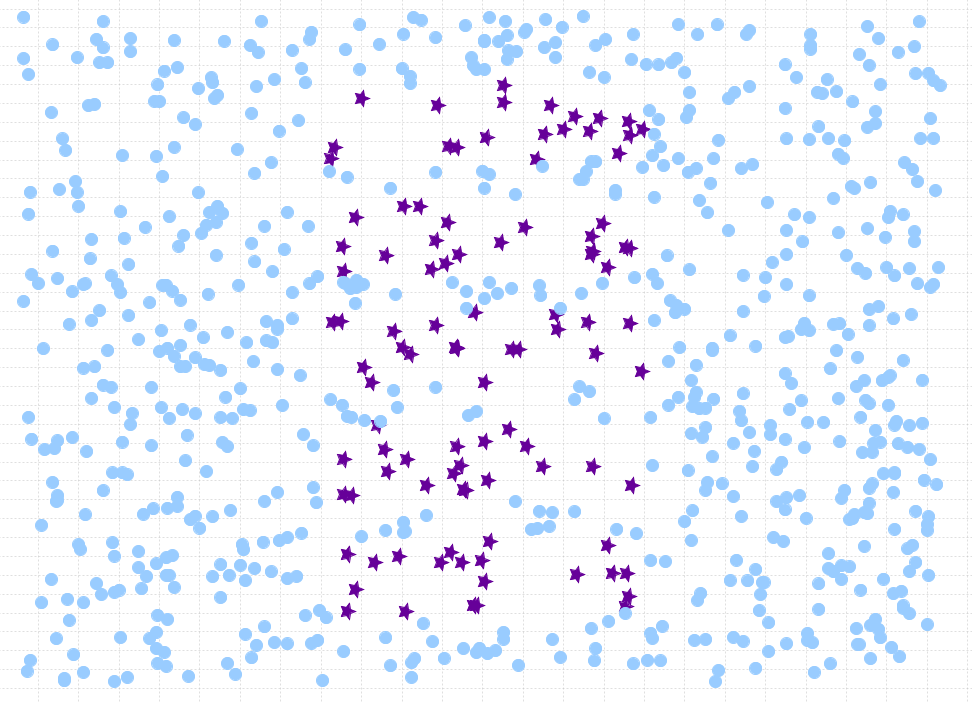
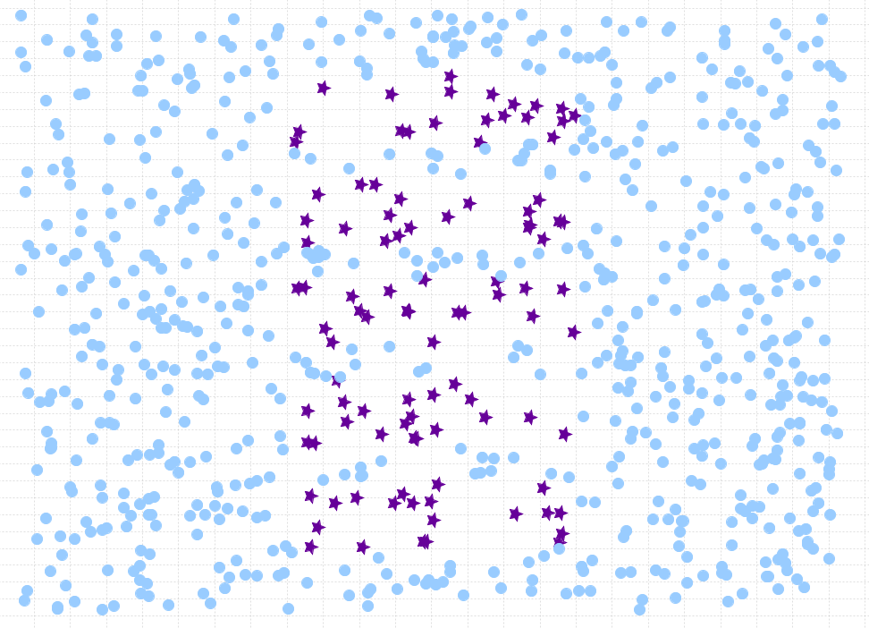

Imbalanced data
Balanced accuracy
Re-sampling
Undersampling
Tomek link
Oversampling
Synthetic Minority Over-sampling Technique (SMOTE)
Hybrid
Comparison
Eight different over-, under- and hybrid sampling techniques, from the
imbalanced-learn library (Python) were compared to eachother, and compared to
when no re-sampling technique is used. The metrics that were compared are accuracy,
balanced accuracy and computational complexity. Seventeen different datasets from the
UCI Machine Learning Repository
were used, using
CART, without pruning, as classifier.
The hyper-parameters
max_depth, and
min_samples_split were optimized using
a grid search optimization technique.
For each dataset, 10 different measurements were taken using 5-fold cross validation with
varying seeds. Then, the statistical significance of these measurements was calculated using
student t-test and when the
p-value was below the threshold of 0.05, the win counter for the algorithm with the largest
mean for these measurements was incremented.
The code to execute these experiments can be found below. In order to run it, python2.7 must
be installed and the required libraries too. Then, a data map is required with dataset files
which must be read in through a function that returns a pandas dataframe, the feature
column names, the label column names and the dataset name (an example can be found below
too). After executing this code, a csv_file with all the results will be stored, on location
CSV_FILE.
Dataset loading example
load_datasets.py
import pandas as pd
import numpy as np
import os
def load_austra():
columns = ['X1','X2','X3','X4','X5','X6','X7','X8','X9','X10','X11','X12','X13','X14','Class']
features = ['X1','X2','X3','X4','X5','X6','X7','X8','X9','X10','X11','X12','X13','X14']
df = pd.read_csv(os.path.join(os.sep.join(os.path.realpath(__file__).split(os.sep)[:-1]), 'austra.data'))
df.columns = columns
df['Class'] = df['Class'].map({'y0': 0, 'y1': 1}).astype(int)
return df, features, 'Class', 'austra'
load_all_datasets.py
import data.load_datasets
from inspect import getmembers, isfunction
def load_all_datasets():
datasets = []
for o in getmembers(data.load_datasets):
if isfunction(o[1]):
df, feature_cols, label_col, name = o[1]()
datasets.append({'dataframe': df, 'feature_cols': feature_cols, 'label_col': label_col, 'name': name})
return datasets
Test code
test_balancing.py
import time
import operator
import numpy as np
import pandas as pd
from pandas import DataFrame, Series
from imblearn.combine import SMOTEENN
from imblearn.combine import SMOTETomek
from imblearn.over_sampling import RandomOverSampler
from imblearn.over_sampling import SMOTE
from imblearn.under_sampling import RandomUnderSampler
from imblearn.under_sampling import RepeatedEditedNearestNeighbours
from imblearn.under_sampling import TomekLinks
from sklearn.cross_validation import StratifiedKFold
from sklearn.metrics import accuracy_score
from sklearn.metrics import confusion_matrix
from sklearn.tree import DecisionTreeClassifier
from data.load_all_datasets import load_all_datasets
def get_best_cart_classifier(train, label_col, skf_tune):
# Grid search to find best max_depth and min_samples_split parameter
cart = DecisionTreeClassifier()
max_depths = np.arange(1, 21, 2)
max_depths = np.append(max_depths, None)
min_samples_splits = np.arange(1, 20, 1)
errors = {}
for max_depth in max_depths:
for min_samples_split in min_samples_splits:
errors[(max_depth, min_samples_split)] = []
for train_tune_idx, val_tune_idx in skf_tune:
# Split the training data in a new training set and validation data
train_tune = train.iloc[train_tune_idx, :]
X_train_tune = train_tune.drop(label_col, axis=1)
y_train_tune = train_tune[label_col]
val_tune = train.iloc[val_tune_idx, :]
X_val_tune = val_tune.drop(label_col, axis=1)
y_val_tune = val_tune[label_col]
for max_depth in max_depths:
for min_samples_split in min_samples_splits:
# Set the parameters, build model using training data and calculate error on validation data
cart.max_depth = max_depth
cart.min_samples_split = min_samples_split
cart.fit(X_train_tune, y_train_tune)
predictions = cart.predict(X_val_tune).astype(int)
errors[((max_depth, min_samples_split))].append(
1 - accuracy_score(predictions, y_val_tune, normalize=True))
# Calculate the mean for each list of errors
for max_depth in max_depths:
for min_samples_split in min_samples_splits:
errors[(max_depth, min_samples_split)] = np.mean(errors[(max_depth, min_samples_split)])
# Finally, return the parameters with minimal mean error
best_params = min(errors.items(), key=operator.itemgetter(1))[0]
cart.max_depth = best_params[0]
cart.min_samples_split = best_params[1]
return cart
def sample_test(method, X_train, y_train):
# Create new, balanced dataframes
start = time.time()
prior_nodes = len(X_train)
X_train_sampled, y_train_sampled = method.fit_sample(X_train, y_train)
end = time.time()
X_train_sampled = DataFrame(X_train_sampled, columns=feature_cols)
y_train_sampled = DataFrame(y_train_sampled, columns=[label_col])[label_col]
# Random permutation of the dataframe
perm = np.random.permutation(len(X_train_sampled))
X_train_sampled = X_train_sampled.iloc[perm].reset_index(drop=True)
y_train_sampled = y_train_sampled.iloc[perm].reset_index(drop=True)
train = X_train_sampled.copy()
train[y_train_sampled.name] = Series(y_train_sampled, index=train.index)
print 'From', prior_nodes, 'to', len(X_train_sampled), 'in', (end - start), 'seconds'
# Grid search to find best CART classifier (sklearn)
skf_tune = StratifiedKFold(train[label_col], n_folds=3, shuffle=True, random_state=None)
cart_clf = get_best_cart_classifier(train, label_col, skf_tune)
# Fit the model on training data, predict the test data and return a confusion matrix + exec. time
cart_clf.fit(X_train_sampled, y_train_sampled)
predictions = cart_clf.predict(X_test).astype(int)
return confusion_matrix(y_test, predictions), end - start
def classification_metrics(confusion_matrices):
# For each fold we have a confusion matrix. From each confusion matrix, extract the accuracy and balanced accuracy
# and finally return (mean_acc, stddev_acc) and (mean_bal_acc, stddev_bal_acc)
accuracies = []
bal_accuracies = []
for conf_matrix in confusion_matrices:
diagonal_sum = sum([conf_matrix[i][i] for i in range(len(conf_matrix))])
norm_diagonal_sum = sum(
[float(conf_matrix[i][i]) / float(sum(conf_matrix[i])) for i in range(len(conf_matrix))])
total_count = np.sum(conf_matrix)
accuracies.append(float(diagonal_sum) / float(total_count))
bal_accuracies.append(float(norm_diagonal_sum) / conf_matrix.shape[0])
return {'acc': (np.around([np.mean(accuracies)], 4)[0], np.around([np.std(accuracies)], 2)[0]),
'balacc': (np.around([np.mean(bal_accuracies)], 4)[0], np.around([np.std(bal_accuracies)], 2)[0])}
CSV_FILE = '/results.csv'
datasets = load_all_datasets()
NR_FOLDS = 5
figures = {}
results_df = pd.read_csv(CSV_FILE)
cols = results_df.columns.values
seed = int(np.random.rand() * 100000)
for dataset in datasets:
# Read in a new dataset
print dataset['name']
df = dataset['dataframe']
label_col = dataset['label_col']
feature_cols = dataset['feature_cols']
# The different re-sampling methods that are being tested
methods = {'RUS': RandomUnderSampler(), 'Tomek': TomekLinks(), 'ENN': RepeatedEditedNearestNeighbours(),
'ROS': RandomOverSampler(ratio='auto'), 'SMOTE': SMOTE(ratio='auto', kind='regular'),
'SMOTE SVM': SMOTE(ratio='auto', kind='svm', **{'class_weight': 'balanced'}),
'SMOTE Tomek': SMOTETomek(ratio='auto'), 'SMOTE ENN': SMOTEENN(ratio='auto'), 'Imbalanced': None}
conf_matrices, avg_time = {}, {}
for key in methods.keys(): conf_matrices[key] = []; avg_time[key] = []
# NR_FOLDS-fold cross validation
skf = StratifiedKFold(df[label_col], n_folds=NR_FOLDS, shuffle=True, random_state=seed)
for fold, (train_idx, test_idx) in enumerate(skf):
print 'Fold', fold + 1, '/', NR_FOLDS
train = df.iloc[train_idx, :].reset_index(drop=True)
X_train = train.drop(label_col, axis=1)
y_train = train[label_col]
test = df.iloc[test_idx, :].reset_index(drop=True)
X_test = test.drop(label_col, axis=1)
y_test = test[label_col]
# This CV object is used for hyper-parameter optimization
skf_tune = StratifiedKFold(train[label_col], n_folds=3, shuffle=True, random_state=None)
# First, we measure the metrics for when no re-sampling is applied
cart_clf = get_best_cart_classifier(train, label_col, skf_tune)
cart_clf.fit(X_train, y_train)
predictions = cart_clf.predict(X_test).astype(int)
conf_matrices['Imbalanced'].append(confusion_matrix(y_test, predictions))
avg_time['Imbalanced'].append(0) # No re-sampling applied, so no execution time
for key in methods.keys():
if methods[key] is not None:
confmat, time_elapsed = sample_test(methods[key], X_train, y_train)
conf_matrices[key].append(confmat)
avg_time[key].append(time_elapsed)
for key in methods.keys():
print classification_metrics(conf_matrices[key])
for algorithm in methods.keys():
metrics = classification_metrics(conf_matrices[algorithm])
results_df = pd.concat(
[pd.DataFrame([[seed, dataset['name'], NR_FOLDS, algorithm, 'acc', metrics['acc'][0], metrics['acc'][1]]],
columns=cols), results_df], ignore_index=True)
results_df = pd.concat(
[pd.DataFrame(
[[seed, dataset['name'], NR_FOLDS, algorithm, 'balacc', metrics['balacc'][0], metrics['balacc'][1]]],
columns=cols), results_df], ignore_index=True)
results_df = pd.concat(
[pd.DataFrame([[seed, dataset['name'], NR_FOLDS, algorithm, 'time', np.mean(avg_time[algorithm]),
np.std(avg_time[algorithm])]],
columns=cols), results_df], ignore_index=True)
results_df.drop_duplicates(inplace=True)
results_df = results_df.reset_index(drop=True)
results_df.to_csv(CSV_FILE, index_label=False)
With the results in .csv file, they are easy to process, especially with a library such as
pandas in Python. I decided to process the data a bit more to generate a win-tie-loss
matrix with
d3.js. The code to generate this matrix
can be found
here.
The matrix visualisation is easy to quickly compare different algorithms and
can be interpreted as follows. When the algorithm displayed on the row
has more wins than losses compared to the algorithm on the column, the cell is colored green.
If the algorithm displayed in the row has more losses than wins compared to the algorithm in
the column, the cell is colored red. In case of a tie, the cell is colored yellow.
The brighter (or purer) the color, how larger the number of wins/ties/losses. When you click
on a cell, a comparison of the two algorithms displayed on the row and column of the cell
regarding the different metrics on the seventeen datasets is displayed.
Win-Tie-Loss Matrix for accuracy
Win-Tie-Loss Matrix for balanced accuracy
 
